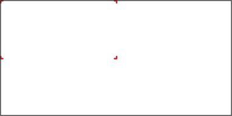

Activity 3.1: Recognizing similarities between figures
1.Cut a rectangle from the edge of a plain paper or a manila sheet as shown in the following figure, then compare the rectangle with the original paper in terms of shape and size.

2.Measure the lengths of sides and angles of both shapes, then find the ratio of the corresponding side lengths.
3.Use your observations to make a general conclusion about the shapes, and explore additional sources such as the internet and books to enrich your competence.
4.Reflect on real objects around you with similar features and characteristics and share your insights.